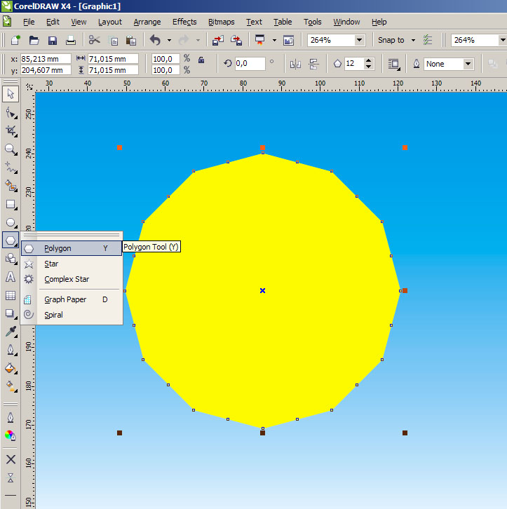
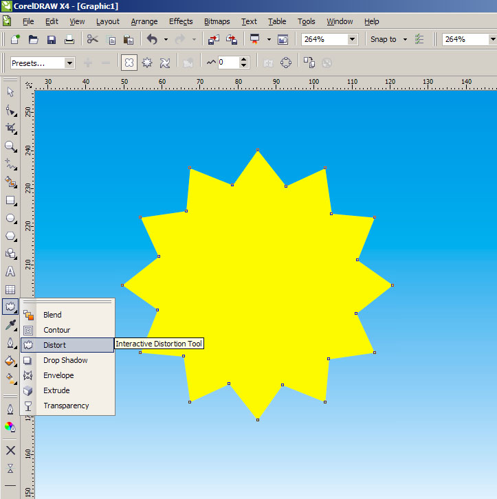
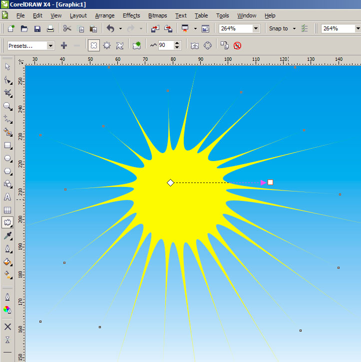
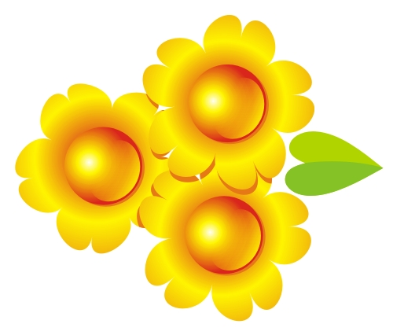

СОЛНЦЕ
sergey / 22.02.2011, 19:02/00:41
Форум:
Зима уже поднадоела, хочется тепла и солнца.
Рисуем......., как в песне: "Солнечный круг, небо вокруг...".
Но нам нужен многоугольник!!!

Превращаем многоугольник в звезду.
Это для того, чтоб у будущего солнца лучи были разной длины.
Применяем Interactive Distortion Tool


Заметьте, что я применил инструмент не из центра, а для динамики ближе к краю. Бывает, что и такого результата достаточно.
Преобразовав в кривые можно доработать вручную.
Но пока объект не преобразован в кривые — количество лучей можно менять.
А у меня получилось вот такое солнце
Иногда использую такой способ в рисовании привычных звёзд
Всем удачи и творческих успехов!

А если применить Interactive Distortion Tool к центру, то из пятиугольника
получатся прикольные цвяточки

ну и ромашка
Цветы хорошо получаются.
А солнце как-то, не знаю,.. или чего-то надо добавить.
А может иногда именно такое и годится.
Пожалуй, свой урок опубликую.